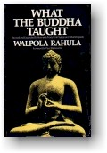
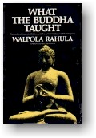

|  |
ÐỨC PHẬT ÐÃ DẠY NHỮNG GÌ
Hòa thượng WALPOLA RAHULA Nguyên tác: "What The
Buddha Taught" |
 |
|
BuddhaSasana Home Page |
Vietnamese, with Unicode Times font |
|  |
ÐỨC PHẬT ÐÃ DẠY NHỮNG GÌ
Hòa thượng WALPOLA RAHULA Nguyên tác: "What The
Buddha Taught" |
|
|
Chương Năm
DIỆU ÐẾ THỨ TƯ: ÐẠO Chân lý cao cả thứ tư là Con Ðường dẫn đến sự chấm dứt khổ. Con đường này được gọi là Trung đạo (Majjhimà Patipadà) vì nó tránh hai cực đoan: cực đoan tìm hạnh phúc bằng cách theo đuổi khoái lạc giác quan, một điều "thấp kém, tầm thường, không lợi ích, đường lối của những kẻ hạ liệt", và cực đoan tìm hạnh phúc bằng cách tự ép xác dưới nhiều hình thức khổ hạnh, điều này cũng "đau khổ, không xứng đáng, không lợi ích." Vì đã đích thân thử hai cực đoan ấy và thấy chúng vô dụng, Phật đã tìm ra Trung đạo bằng kinh nghiệm của chính ngài và thấy nó "đem lại tri kiến, đưa đến an tịnh, trí tuệ, giác ngộ, Niết-bàn." Trung đạo này thường được gọi là Bát chánh đạo (ariya attangika magga): con đường thánh tám ngành, vì nó gồm có tám phần:
Chánh kiến (sammàditthi):
thấy đúng. Hầu hết giáo lý Phật giảng dạy suốt 45 năm đều đề cập con đường ấy cách này hay cách khác. Ngài giảng giải nó theo nhiều hình thức khác nhau, dùng những danh từ khác nhau tùy người nghe, tùy trình độ phát triển và khả năng lãnh hội của họ. Nhưng tinh túy của hàng ngàn bài thuyết pháp rải rác trong các kinh điển Phật giáo đều nằm trong Bát chánh đạo. Ðừng tưởng ta phải lần lượt tu tập tám loại hay tám ngành của con đường ấy theo thứ tự kể trên, mà nên cố tu tập đồng thời cả tám, tùy theo khả năng mỗi người. Vì tất cả tám ngành đều quan hệ lẫn nhau, mỗi ngành đều giúp cho sự tu luyện những ngành khác. Tám yếu tố ấy nhằm mục đích giúp phát triển và kiện toàn ba khía cạnh cốt yếu trong sự tu tập và giới luật Phật giáo là Giới (sìla), Ðịnh (samàdhi) và Tuệ (pannà)[1]. Bởi thế ta sẽ hiểu rõ hơn về Bát chính đạo nếu phân nhóm và giải thích theo ba đề mục ấy. Giới được xây dựng trên căn bản của đạo Phật là từ (tình yêu phổ quát) và bi (thương xót) đối với tất cả mọi sinh vật. Tiếc thay nhiều học giả đã quên đi lý tưởng vĩ đại này của Phật giáo, mà chỉ chuyên chú vào những phiêu lưu triết lý, siêu hình khi họ nói hay viết về đạo Phật. Ðức Phật ban bố giáo lý của Ngài, "vì lợi ích cho nhiều người, vì an lạc cho nhiều người, vì thương tưởng thế gian" (bahujanahitàya bahujanasukhàya lokànukampàya). Theo Phật giáo, con người toàn thiện phải có hai đức tính cần phát triển song hành: bi (karunà) và trí (pannà). Ở đây, bi bao gồm lòng thương, bác ái, sự tử tế, bao dung và tất cả những đức tính của một tâm hồn cao thượng, đây là phương diện cảm xúc của trái tim; còn trí có nghĩa là phương diện tri thức hay những đức tính của khối óc. Nếu chỉ phát triển phần cảm xúc mà quên phần tri thức, người ta dễ trở thành một người ngu tốt bụng; nhưng nếu chỉ phát triển khía cạnh tri thức mà bỏ quên cảm xúc, người ta dễ trở thành một người trí có trái tim khô héo không chút cảm thương nào đối với tha nhân. Bởi thế muốn toàn thiện, người ta phải phát triển đồng đều cả hai khía cạnh. Ðấy là mục đích của lối sống theo đạo Phật, trong đó trí tuệ và từ bi liên quan mật thiết với nhau như ta sẽ thấy. Giới căn bản trên từ và bi bao gồm 3 yếu tố của Bát chánh đạo: Chánh ngữ, chánh nghiệp và chánh mạng (số 3, 4, 5 trong bảng kê trên). Chánh ngữ có nghĩa là: - Không nói dối. - Không nói xấu, vu khống, hay nói những lời có thể gây thù ghét, bất hòa, tan rã giữa những cá nhân hay những nhóm người. - Không nói cứng cỏi, thô lỗ, vô lễ, ác độc, thóa mạ người. - Không nói lời mách lẻo, vô ích, xuẩn ngốc. Khi tránh được những hình thức ngôn ngữ sai quấy và có hại ấy, tất nhiên người ta phải nói sự thật, phải dùng những từ ngữ thân thiện, khoan hòa, êm ái, và nhã nhặn, có ý nghĩa và lợi ích. Người ta không nên nói năng bừa bãi, mà phải nói đúng lúc và đúng chỗ. Nếu không thể nói điều gì lợi ích, tốt hơn nên giữ sự "im lặng cao quý". Chánh nghiệp nhằm phát sinh lối hành xử hợp đạo đức, khả kính và hòa bình. Chính nghiệp là nên từ bỏ giết hại sinh mạng, từ bỏ trộm cắp, bỏ việc buôn bán giao dịch bất lương, bỏ tà dâm và giúp kẻ khác sống một đời hòa bình đáng kính theo chính đạo. Chánh mạng có nghĩa người ta nên từ bỏ sinh nhai bằng một nghề nghiệp có hại cho kẻ khác, như buôn bán khí giới, chất uống say sưa, độc dược, giết hại súc vật, lừa dối v.v.. và nên sống bằng nghề nghiệp đáng kính, vô tội, không có hại cho người, vật. Ở đây ta có thể thấy rõ đạo Phật cực lực chống đối bất cứ loại chiến tranh nào, khi lập nguyên tắc rằng buôn bán khí giới là một phương tiện sinh sống xấu xa bất chánh. Ba yếu tố này (chánh ngữ, chánh nghiệp, chánh mạng) của Bát chính đạo lập thành Giới. Cần nhận chân rằng giới luật Phật giáo cốt nhằm mục đích đem lại hạnh phúc, an lạc cho đời sống cá nhân và xã hội. Không thể có sự phát triển tâm linh nào nếu không có căn bản đạo đức ấy. Kế đến là kỷ luật tâm linh bao gồm 3 yếu tố khác của Bát chánh đạo là chánh tinh tiến, chánh niệm và chánh định (số 6, 7, 8). Chánh tinh tiến là ý chí mạnh mẽ để ngăn ngừa những điều xấu chưa sinh; để từ bỏ những điều xấu đã sinh; để làm phát sinh những điều thiện chưa sinh; và tăng trưởng những điều thiện đã sinh. Chánh niệm (sự để ý, chú ý chân chính), là luôn luôn rõ biết, đầy đủ ý thức và chú ý về:
1. Những hoạt động của
thân xác (kàya); Sự thực hành pháp quán hơi thở ra vào (ànàpànasati) là một trong những pháp tập luyện nổi tiếng liên quan đến thân xác để phát triển tâm linh. Có nhiều cách khác để phát triển sự chú tâm liên quan đến thân xác, như các phương pháp thiền quán. Về các cảm giác và cảm xúc, người ta phải ý thức rõ ràng tất cả mọi hình thái của chúng như vui, khổ, hoặc không vui, không khổ, cách chúng xuất hiện và tan biến trong ta. Về những hoạt động của tâm, người ta phải ý thức xem tâm mình có tham hay không, có sân hay không, có ảo tưởng hay không, phân tán hay tập trung v.v..Với phương thức ấy, ta phải luôn luôn chú ý mọi động tác của tâm, xem chúng sinh và diệt ra sao. Cuối cùng, về ý nghĩ hay tư tưởng, quan niệm và các pháp, ta phải biết tính chất của chúng, chúng sinh diệt ra sao, phát triển ra sao, bị áp đảo và tiêu diệt ra sao v.v.. Bốn hình thức tu tập hay thiền quán này được bàn chi tiết trong kinh Niệm xứ Satipatthàna-sutra [2]. Phần thứ ba cuối cùng của kỷ luật tâm linh là Chánh định, đưa đến bốn thiền (dhyàna). Ở sơ thiền đẩy lùi được tham dục, (tư tưởng không lành như nhục dục), sân, hôn trầm (ngủ gà ngủ gật), trạo cử (lo âu, bất an) và hoài nghi; nhưng duy trì những cảm giác hỉ và lạc, cùng với một vài hoạt động tâm linh (tầm, tứ). Ở thiền thứ hai, tất cả mọi hoạt động của tâm (tầm, tứ) biến mất, sự an tĩnh và nhất tâm được phát triển, cảm giác hỉ và lạc vẫn còn được giữ lại. Ở thiền thứ ba, hỉ cũng biến mất nhưng lạc vẫn còn, cùng với tâm xả. Ở thiền thứ tư, mọi cảm giác (thân) lạc khổ, (tâm) hỉ ưu đều tan biến, chỉ còn lại xả và sự nhất tâm thuần tịnh (xả niệm thanh tịnh). Như thế tâm được huấn luyện, khép vào kỷ luật và phát triển nhờ chánh tinh tiến, chánh niệm và chánh định. Chúng ta đã bàn qua sáu yếu tố của Bát chánh đạo (3,4,5,6,7,8) làm đối tượng cho Giới và Ðịnh. Hai yếu tố còn lại, Chánh tư duy và Chánh kiến, làm nên trí tuệ. Chánh tư duy liên hệ đến những tư tưởng về từ bỏ, giải thoát, tình yêu vô ngã, bất bạo động trải đến muôn loài. Một điều thú vị và quan trọng cần chú ý ở đây là những ý tưởng về giải thoát, tình yêu vô ngã và bất bạo động được nhóm họp về phía trí tuệ. Ðiều này tỏ rõ rằng trí tuệ chân thật vốn có những đức tính cao quý ấy, rằng mọi tư tưởng về dục vọng vị kỷ, sân hận hay bạo động đều là hậu quả của sự thiếu trí tuệ trong mọi lãnh vực đời sống cá nhân, xã hội, chính trị. Chánh kiến là sự thấy biết mọi sự đúng như thật, và chính Tứ diệu đế mới giải thích sự vật đúng như thật. Bởi vậy chánh kiến rốt cuộc là thấy, hiểu Tứ diệu đế. Sự hiểu biết này là trí tuệ cao cả nhất, thấy được thực tại tối hậu. Theo Phật giáo có hai loại hiểu biết: hiểu biết thông thường của chúng ta là kiến thức, trí nhớ tích lũy, sự lãnh hội dựa trên một số dữ kiện. Phật giáo gọi đấy là "hiểu biết tùy thuộc" (anubodha). Nó không sâu sắc lắm. Sự hiểu biết sâu sắc thật sự gọi là thâm nhập (pativedha), thấy biết sự vật trong bản chất của nó mà không cần tên và nhãn hiệu. Sự thâm nhập này chỉ có thể có khi tâm đã sạch mọi ô nhiễm và đã hoàn toàn phát triển nhờ thiền định[3]. Từ sự miêu tả sơ lược này về Bát chánh đạo, ta có thể thấy rằng đấy là một lối sống phải được mỗi người tuân theo, thực hành và phát triển. Nó là tự kỷ luật trong thân xác, lời nói và ý nghĩ, tự phát triển và tự thanh lọc. Nó không dính líu gì đến đức tin, cầu nguyện, thờ phụng hay nghi lễ. Trong nghĩa đó, nó không có gì có thể gọi là có tính cách "tôn giáo" thông thường. Nó là một con đường dẫn đến sự thực chứng chân lý tối hậu, dẫn đến tự do hoàn toàn, hạnh phúc và bình an nhờ sự hoàn thiện về đạo đức, tâm linh và trí thức. Trong những xứ theo Phật giáo, có những thói tục và nghi lễ đơn giản và đẹp, vào những dịp lễ tôn giáo. Chúng không liên quan gì lắm đến Con Ðường thực sự. Nhưng chúng có giá trị ở chỗ làm thỏa mãn vài cảm xúc tôn giáo và nhu cầu của những người còn thấp kém, và giúp họ dần dần đi đến Con Ðường. Về Tứ diệu đế ta có bốn nhiệm vụ thi hành: 1) Diệu đế thứ nhất là dukkha, bản chất sự sống, nỗi khổ đau của nó, những buồn vui của nó, sự bất toàn, không toại ý, sự vô thường và huyễn hóa. Về chân lý này, việc làm của ta là phải hiểu nó như một sự kiện, hiểu rõ và đầy đủ (parrinneyya) - [Khổ nên biết]. 2) Diệu đế thứ hai là nguồn gốc của khổ tức dục vọng, khát ái và cùng với nó, tất cả những đam mê ô nhiễm bất tịnh khác. Về chân lý này thì hiểu chưa đủ, ở đây việc làm của ta là phải loại bỏ nó, diệt trừ và nhổ nó tận gốc rễ (pahàtabba) - [Tập nên đoạn]. 3) Diệu đế thứ ba là sự chấm dứt khổ, hay Niết-bàn, Chân lý tuyệt đối, thực tại tối hậu. Ở đây việc của ta là phải thực chứng nó (sacchikatabba) - [Diệt nên chứng]. 4) Diệu đế thứ tư là Con Ðường đưa đến thực chứng Niết-bàn. Chỉ hiểu biết về Con Ðường, dù có thấu triệt bao nhiêu cũng không ích. Trong trường hợp này, việc của ta là phải đi theo con đường ấy và tuân giữ nó (bhàvetabba)[4] -[Ðạo nên tu]. Ghi chú: [1] M I (PTS), p.301 [2] Xem Chương Bảy, Thiền định hay Quán tưởng. [3] Vism (PTS), p.510 [4] Mhvg. (Alutgama), 1922, p.10 -ooOoo- Ðầu trang | Mục lục | 01 | 02 | 03 | 04 | 05 | 06 | 07 | 08 | 09 |
Chân thành cám ơn Đại đức Giác Đồng đã gửi tặng bản vi tính (Bình Anson, 09-2002).
[Trở
về trang Thư Mục]
updated:
01-10-2002